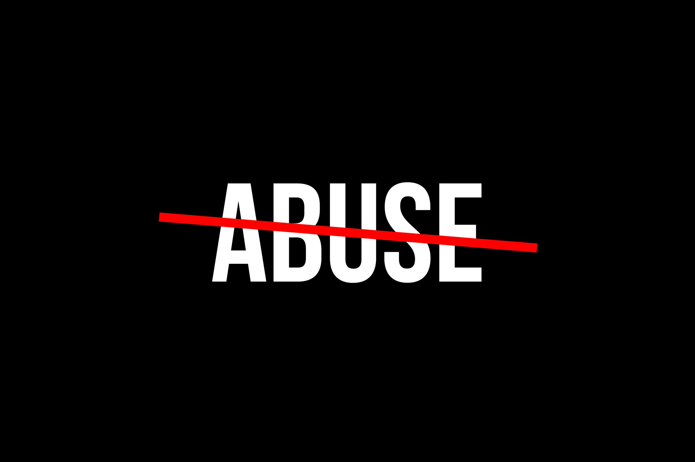

Recognizing an abusive relationship can be very difficult. At the start, it can look like a dream where the partner is perfect and does everything right but this can change very fast. Signs of domestic violence can show up later in the relationship and start with something small until they become unbearable.
Abuse and domestic violence may be different in various relationships but it is evident that the abuser's main goal is to be in control and have power over the abused person all the time.
Some common signs are:
The abuser says things like: “You are bad at everything, without me you would be completely lost. You need me in your life.” In this way they can undermine the confidence and convince the woman that they are completely dependent on them.
Isolation from family and friends. In this way the abused is cut out from other relationships and they only have the abuser to rely on.
Preventing the abused from making any decisions from the small ones like where to go to dinner to the important ones like if they should continue school or not.
A gigantic sign is when the abuser controls all the finances in the relationship and prevents the abused to have their own money for everything. In this way, the abused cannot leave easily even if they want to.
Pressuring to have sex or use drugs or drink alcohol even if they don’t want to.

It is important to recognise also the three stages of violence in a relationship:
The tension building: In this first stage the abuser starts to be annoyed by unpredictable actions or things and the victim tries to keep it calm or to be perfect in everything they do, but that’s impossible.
The acute explosion or explosion of violence: In this second stage the abuser becomes verbally and physically violent, that’s the moment when the victim could try to leave or just protect themselves in every possible way.
The honeymoon phase or the loving reconciliation: The third and final stage sees the abuser profoundly apologise for everything he did and it’s when he swears that it is not happening ever again. Usually, at this point the victim believes him, and drops the possible legal proceedings they intended against him and decide to stay with the abuser again.
The signs and the three stages of violence described above are very common in abusive relationships and we, at Safe Harbour, hope that you or someone you know are not in this situation but if it is the case we advise us to contact an organisation that can help you like the National Domestic Violence Hotline.